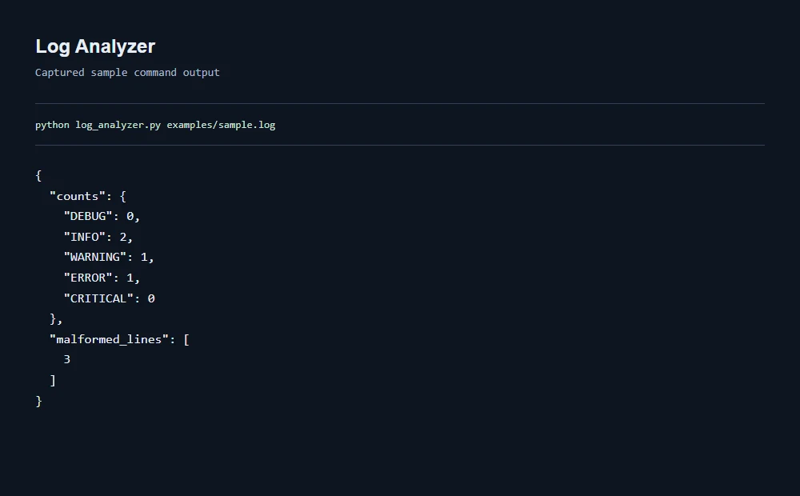

Engineering project · Runtime screenshot
Log Analyzer
Summarize log severity counts and preserve malformed source line numbers.
Verified CLI example
Public source access pending.
Run the local demo
From the prepared project checkout, run these commands and open the address printed by the server. The repository may require access.
cd log-analyzer
python log_analyzer.py examples/sample.log
python -m unittest -vExample output
{
"counts": {
"DEBUG": 0,
"INFO": 2,
"WARNING": 1,
"ERROR": 1,
"CRITICAL": 0
},
"malformed_lines": [
3
]
}
Problem
A small application log needs a predictable summary and a clear list of malformed entries.
Architecture
A Python standard-library CLI validates ISO timestamps and supported severity levels, then emits ordered JSON counts and malformed line numbers.
Engineering decisions
- Always emit all five severity levels, including zero counts.
- Keep strict malformed-line failure separate from input or command errors.
Implemented workflow
- Run the sample log and inspect two INFO, one WARNING and one ERROR entry.
- Add --strict to report malformed input through exit status 1 while retaining the report.
Checks and evidence
The documented sample command and root-level unittest checks passed during this update.
- Executed the sample command with Python 3.13. CSV Cleaner passed two tests, File Inventory passed two tests and Log Analyzer passed one test.
Scope and next steps
- Input uses TIMESTAMP LEVEL message and five supported severity names.
- This is a local file summary, without live ingestion, alerting or distributed log storage.
Technology
Python · Standard Library
Preview availability
Screenshots show the prepared local version. Hosted demos remain pending, and source access may require permission. Local setup requirements and remaining limits are documented above.
← Return to portfolio